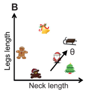
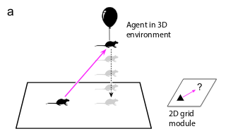

Background
Grid cells are neurons that fire if and only if an animal is physically located at a vertex of a triangular lattice tiling the 2D environment. This produces a triangular/hexagonal pattern of neural activity as the animal navigates through the environment. Grid cells are identified by three parameters: the spacing of the lattice, the orientation of the lattice relative to some reference axis and a translational offset. Sub-networks of grid cells, called modules, fire with the same lattice period and the same orientation, but with a 2D translational offset. By cleverly combining multiple modules, animals can create a unique code for identifying their location in a 2D environment.
 Evidence also suggests that grid cells can be used to represent conceptual task variables
in 2 dimensions. In one study,
experimenters trained participants to map cartoon pictures of birds to cartoon Christmas images.
Evidence also suggests that grid cells can be used to represent conceptual task variables
in 2 dimensions. In one study,
experimenters trained participants to map cartoon pictures of birds to cartoon Christmas images.
 But unbeknown by the participants, the birds were constructed by varying the length of their necks and the length of their legs in a manner that implicitly defined a two-dimensional task space (right), where the task could be thought of as identifying the "location" of the Christmas images based on the (neck length, leg length) position. Surprisingly, evidence suggested that grid cells were used to solve this task.
However, many tasks might reasonably require higher dimensional spaces for representation and computation. Some researchers have looked into 3D grid cells for animals that navigate vertically (e.g. bats), but a strong, positive answer hasn't emerged, and there's certainly no indication of grid cells for dimensions ($n \geq 4$).  To clarify why this is problematic, imagine how one might represent $\mathbb{R}^3$ in $\mathbb{R}^2$. If we naively try projecting $\mathbb{R}^3$ down to $\mathbb{R}^2$ (left), the mapping will be non-invertible (since one dimension will be lost) and the animal will be unable to unambiguously identify where it is located. In the cartoon depiction, the animal can identify its $(x, y)$ position, but its $z$ position is ambiguous.
Research Questions
This raised a conundrum: how does the neural circuitry that underpins $\mathbb{R}^2$ work in arbitrary $\mathbb{R}^N$ while its activity is constrained to $\mathbb{R}^2$? More specifically, we might ask the following questions:
- Could the same neural circuitry used for representing 2-D Euclidean space also be used for representing N-dimensional Euclidean space?
- How could we characterize the capacity of such a representation?
- What parameters determine the capacity, and how does the capacity scale as a function of those parameters?
Intuition
The answer is yes, the same neural circuitry can be used
Mathematics
We first need to start by understanding a commonly used model of grid cell modules in $\mathbb{R}^2$. This model posits that each grid cell module converts the animal's position $x(t)$ into a macroscopic 2D periodic variable $\phi(x(t))$, where the change in firing $\frac{d\phi}{dt}$ is related to the animal's change in position $\frac{dx(t)}{dt}$ by a linear velocity operator.
$ \begin{align} \frac{d\phi}{dt} &= A \frac{dx(t)}{dt} \end{align} $
A module might have some default $\varphi$
Experiments and Results
Discussion
Summary
Notes
I appreciate any and all feedback. If I've made an error or if you have a suggestion, you can email me or comment on the Reddit or HackerNews threads.